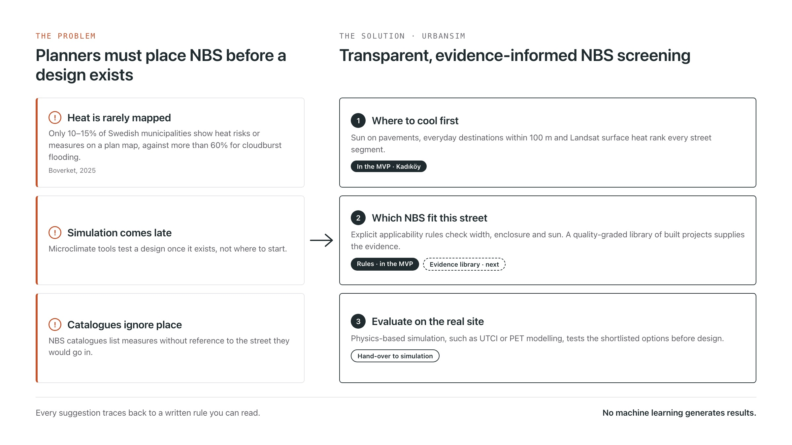
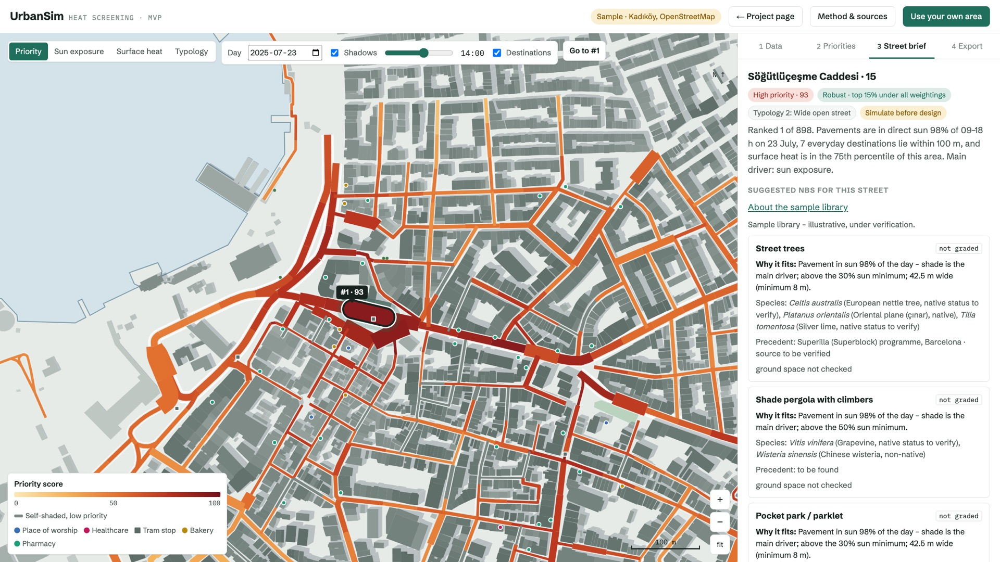

UrbanSim
UrbanSim helps planners decide where cooling should start and which nature-based solutions fit each street, before anything is drawn. UrbanSim proposes nature-based solutions from evidence and transparent rules; physics-based tools evaluate them. No machine learning generates results.

Planners are asked to use nature-based solutions (NBS) to cool cities, but lack a quick way to see where to start and what fits a given street. Simulation tools test a design once it exists, and NBS catalogues list measures without reference to place.
In Sweden, heat is where the gap is widest: only 10–15% of municipalities show heat risks or measures on a plan map, against more than 60% for cloudburst flooding (Boverket, 2025).
Funded by Sustainability Leapfrogs
UrbanSim received a summer scholarship of 40,000 SEK from the Sustainability Leapfrogs programme at LU Innovation, Lund University. Working alone, I developed the pitch and a first prototype over the summer and reported progress monthly.
UrbanSim follows four questions, in the order a planner asks them. It builds on the method of my MSc thesis in Kadıköy: the social context decides where to act, the physical context decides how. The MVP runs on the thesis area, Caferağa and Moda: streets from OpenStreetMap, building heights from GlobalBuildingAtlas and surface heat from Landsat.
Every suggestion comes from written rules with a cited source and an evidence grade, not from a black-box model, and no temperature reduction is shown unless it can be sourced.

Test with planners in Skåne municipalities, on their own districts.
Build the NBS evidence library: implemented projects, their site conditions and measured performance, graded by evidence and building on my work in AIM-NBS. This unlocks steps 2 and 4.
Extend to Nordic conditions and cloudburst flooding, the focus of the industrial PhD I am preparing.